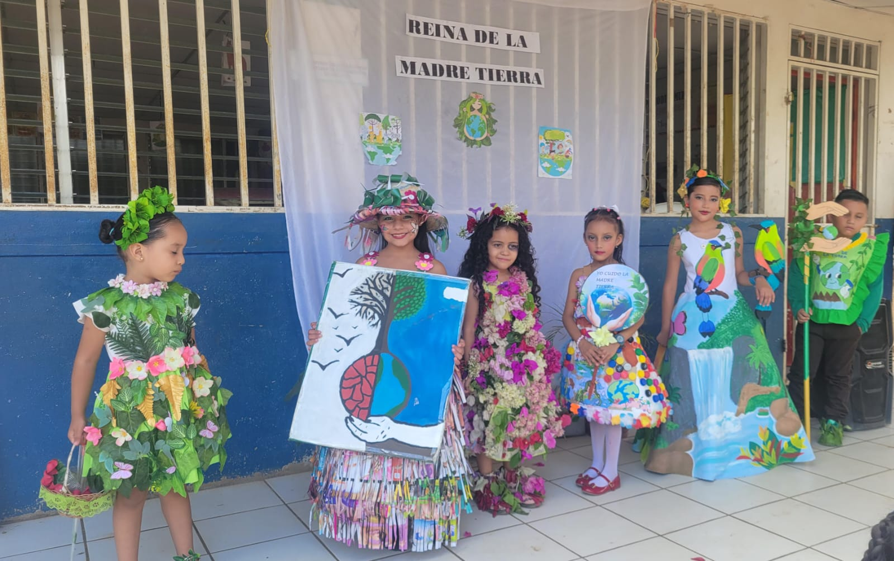

Elección de la Reina de la Madre Tierra
En Eco Guardianes NORA ASTORGA, celebramos con orgullo la primera edición de la "Elección de la Reina de la Madre Tierra", un evento que combina belleza, compromiso ambiental y liderazgo comunitario. Este certamen reunió a 15 jóvenes de diferentes comunidades, quienes presentaron proyectos innovadores para proteger nuestro planeta.
Las participantes destacaron por sus iniciativas, que incluyeron campañas de reciclaje, reforestación y educación ambiental. La ganadora, María Solís, propuso un plan para restaurar un humedal local, integrando a escuelas y voluntarios en la conservación de ecosistemas acuáticos. El evento culminó con una gala al aire libre, decorada con materiales reciclados y alimentada por energía solar.
La Elección de la Reina de la Madre Tierra no solo reconoció el talento y la pasión de estas jóvenes, sino que también inspiró a cientos de asistentes a unirse a la causa ecológica. ¡Prepárate para la próxima edición y participa en nuestros talleres de liderazgo ambiental!